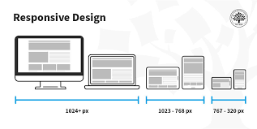

Responsive Design
It is important to make sure images and text still appear as intended, even if the user is viewing the website on a smaller screen
Some tools you can use to make your website more responsive include:
- %
- rem
The "%" make the image or text take up a certain percentage of the page. This makes it so no matter the size of the webpage, the picture will take up the same amount of space.
The "rem" dictates an element's font size relative to the size of the root element. It can be easily doubled with "2rm"